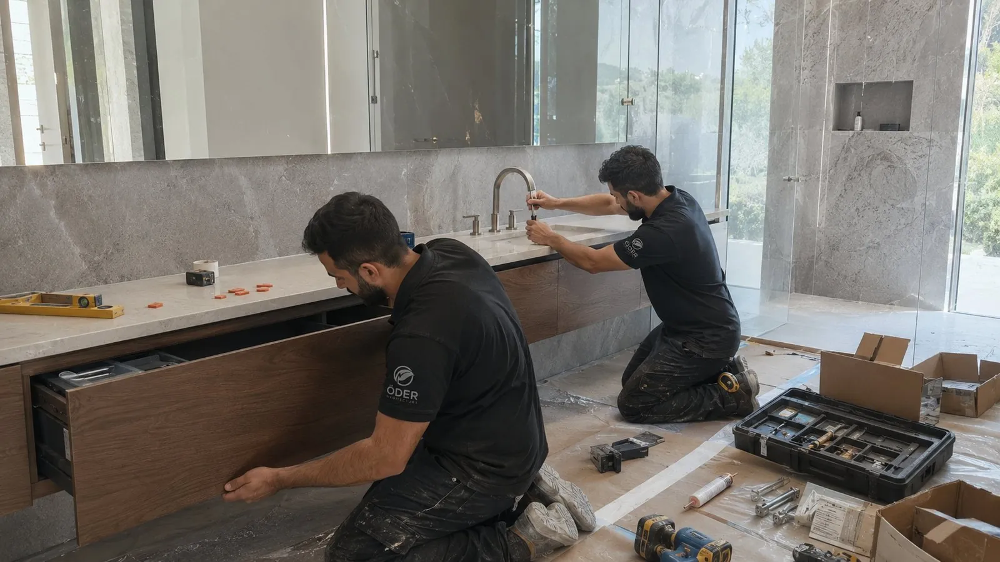

01 · Brief ve fuar bilgisi
Fuarı, stand ölçüsünü, açık cepheleri ve sergilenecek ürünleri birlikte netleştiririz.
Markanızı fuar alanında görünür kılan stand tasarımı, teşhir mobilyası, toplantı alanı ve uygulama çözümleri.
Ne kazanırsınız: Fuar alanında markanızı ayırt eden, ürününüzü gösteren ve ziyaretçiyle görüşmeye alan açan bir stand.
WhatsApp’tan teklif alın ↗Telefonla arayın: +90 534 547 22 39
Fuar standı projelerinde stand konseptini, teşhir mobilyasını, toplantı alanını ve kurulum koordinasyonunu fuar organizasyonunun kuralları ve takvimiyle birlikte ele alırız.
Fuarı, stand ölçüsünü, açık cepheleri ve sergilenecek ürünleri birlikte netleştiririz.
Stand tasarımını, teşhir ve toplantı alanlarını çizimle onayınıza sunar, üretimi planlarız.
Kurulumu fuar takvimine göre yapar, söküm adımlarını belirlenen kapsamda planlarız.
Tekstil fuarı standı kurulumu: Tekstil fuarı standında duvar, kumaş ve ürün teşhir yüzeylerinin saha kurulumu.
Fuar standı kısa sürede kurulup sökülen ama markayı en görünür biçimde temsil etmesi gereken bir mekândır. Stand tasarımını, teşhir mobilyasını, toplantı alanını ve saha kurulumunu fuarın kurallarıyla birlikte planlarız.
Marka kimliğinize ve ürününüze göre stand yerleşimi ve görsel dil.
Ürün sergileme üniteleri ile ziyaretçiyle görüşme ve depo alanları.
Üretim, taşıma ve saha kurulumunun fuar takvimine göre koordinasyonu.
Fuarın adı, şehri ve tarihi, stand alanı ve açık cephe bilgisi, sergilenecek ürünler, marka kimliğinize ait görseller ve varsa fuarın teknik şartnamesi ilk değerlendirme için yeterlidir.
Proje formuna geçin ↗Fotoğrafları WhatsApp’tan gönderin ↗Tasarım, üretim ve kurulum fuar takvimine bağlı olduğu için stand ölçünüz ve fuar tarihleri belli olur olmaz görüşmeye başlamanız planlamayı kolaylaştırır.
Evet. Stand ölçüsü, yükseklik, cephe ve teknik bağlantılarla ilgili fuar kuralları tasarım aşamasında dikkate alınır.
Evet. Müşteri görüşmeleri için toplantı alanı ve malzeme için depo bölümü standın yerleşiminde birlikte planlanabilir.
Türkiye ve Balkan ülkelerindeki fuar taleplerini konum, takvim ve kapsamına göre değerlendiriyoruz.
Evet. Tekstil, perde ve kumaş markalarına özel standlar için Tekstil Fuarı Standı sayfasına bakabilirsiniz.
Şehir/ülke, proje türü ve yaklaşık alanı paylaşın. Size uygun ilk görüşme akışını hazırlayalım.
Proje formuna geçin ↗Telefonla arayın: +90 534 547 22 39